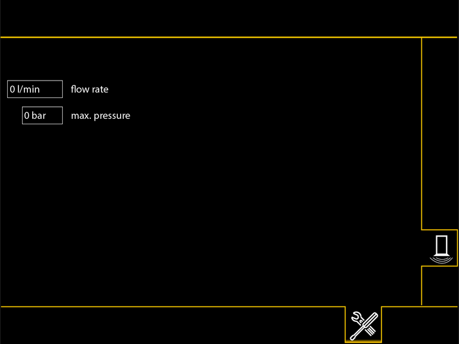

Bildschirmseite Hammer

Taste Bildschirmseite Hammer
Auf Bildschirmseite Hammer umschalten.
Die Bildschirmseite Hammer bietet Einstellungen zu den dargestellten Einheiten an.


Taste Hammer-Modus
Automatik-Modus ist gewählt.
Hammer führt kontinuierlich Schläge aus.
Einzelschlag-Modus wählen.

Taste Hammer-Modus
Einzelschlag-Modus ist gewählt.
Hammer führt Einzelschläge aus.
Automatik-Modus wählen.
Taste Hydraulikölheizung*
Hydraulikölheizung des Hammers einschalten.

Taste Position der Sensoren
Normale Position der Sensoren ist gewählt (Sensoren an unterer Position montiert).
High-Restart wählen (Sensoren an oberer Position montiert).

Taste Position der Sensoren
High-Restart ist gewählt (Sensoren an oberer Position montiert).
Hub oder Schlag des Hammers kann früher oder schneller ausgeführt werden.
Normale Position der Sensoren wählen (Sensoren an unterer Position montiert).

Eingabefeld Rammgewicht
Aufgerüstetes Rammgewicht einstellen.

Fig. 2529: Bildschirmseite Hammer (mit Hammer anderer Hersteller)
Fig. 2529: Bildschirmseite Hammer (mit Hammer anderer Hersteller)